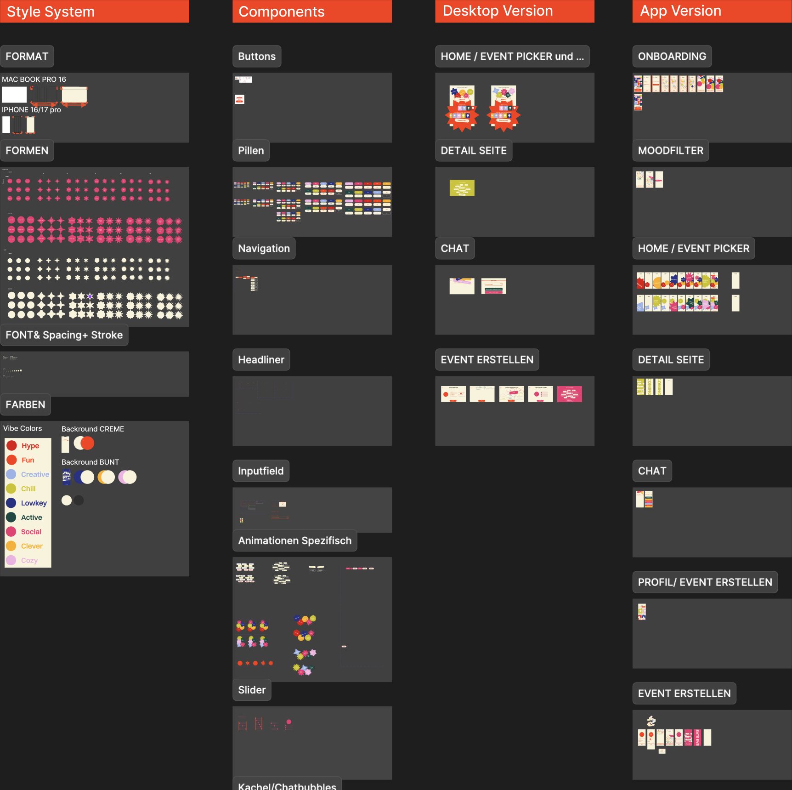
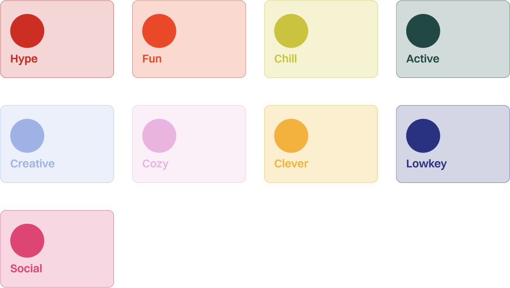
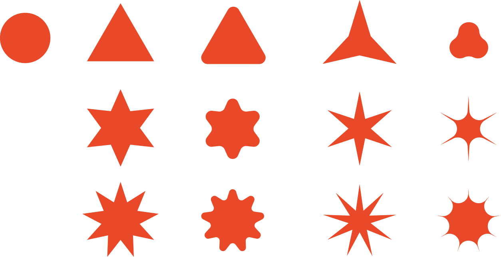

Moodly
Die App bringt junge Menschen dazu, wieder mehr im Hier und Jetzt zu leben. Statt endlos langem Scrollen, um das beste Event zu finden, werden den Nutzer:innen basierend auf ihrer aktuellen Stimmung wenige, kuratierte Events in der Umgebung vorgeschlagen.
Der Prototyp ist im Rahmen einer Gruppenarbeit entstanden.


